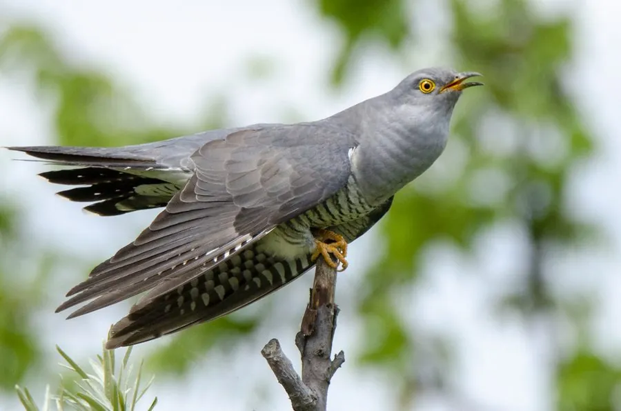

鸟类 · 动物界
杜鹃 Cuculus canorus

叫声如“布谷”的候鸟，自己不孵卵，把蛋产在苇莺等小鸟的巢里由义亲抚养，是著名的巢寄生鸟类。
- 分类
- 门脊索动物门纲鸟纲目鹃形目科杜鹃科属杜鹃属
- 栖息环境
- 森林、林缘、芦苇荡、灌丛和农田，常隐蔽在树冠中鸣叫
- 地理分布
- 欧亚大陆和非洲广泛分布，中国大部分地区有繁殖，冬季南迁
- 保护级别
- IUCN 无危（LC）；中国“三有”保护动物
物种志
杜鹃体长 32–36 cm，体重约 105–130 g，翼展 55–60 cm。雄鸟上体灰色，腹部白色并带细横斑，尾羽长并带白斑，翅膀尖长，飞行时像一只小鹰；雌鸟有灰色型和棕色型两种，棕色型背部呈红褐色。它的喙细长，脚黄色。
杜鹃广泛分布于欧亚大陆和非洲，中国大部分地区都有繁殖种群，冬季南迁到非洲和南亚。它们栖居在森林、林缘、芦苇荡和农田，以昆虫为食，尤其爱吃毛毛虫。杜鹃是著名的巢寄生鸟类：雌鸟把蛋产在苇莺等小鸟的巢里，由义亲孵化并喂养，雏鸟出壳后还会把义亲的蛋或雏鸟推出巢外。杜鹃每窝可产 8–20 枚蛋，分放到不同巢中，孵化约 12–13 天。目前杜鹃被列为无危物种，中国将其列入“三有”保护名录。
形态与习性
- 食性昆虫为主，尤其爱吃毛毛虫
- 体长32–36 cm
- 体重约 105–130 g
- 翼展55–60 cm
- 繁殖巢寄生，每窝可分产 8–20 枚蛋，孵化约 12–13 天
- 寿命野外约 8–10 年
- 巢寄生把蛋产在苇莺等小鸟巢中，由义亲抚养
趣味知识
- 杜鹃自己不孵蛋，而是把蛋产在苇莺等小鸟的巢里。
- 杜鹃雏鸟出壳后会把义亲的蛋或雏鸟推出巢外。
- 杜鹃最爱吃毛毛虫，是森林里的益鸟。
- 它的叫声“布谷、布谷”是夏天的标志，因此又叫布谷鸟。